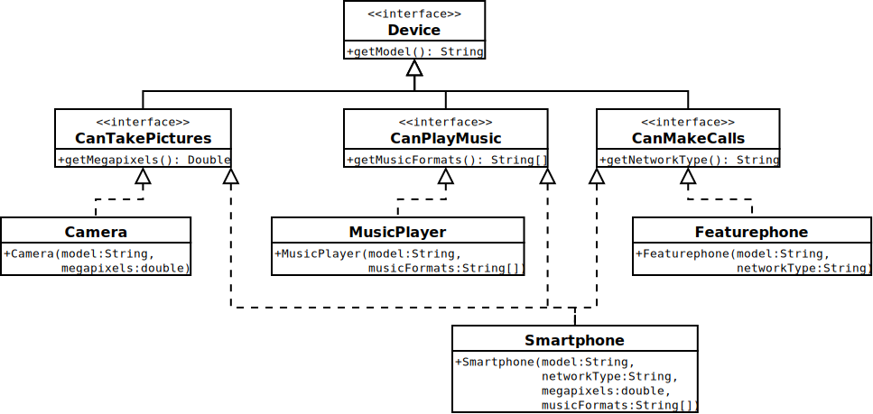

Module 8, Part 2: Java interfaces#
In this second part of Module 8 we study how to define a Java interface, and how to write reusable code based on that interface.
Defining and Using interfaces in Java#
When designing and writing Java programs, we may sometimes need to handle objects that should intuitively belong to different classes, and yet, have very similar programming interfaces.
In these situations, Java allows us to define and give a name to commonly-used
programming interfaces, by using the keyword interface; then, we can write
reusable code that works on any object that provides the desired interface.
The idea, in a nutshell, is:
We can define an interface with a list of so-called abstract methods, i.e. method names with argument and return types, but without a body. For example, we may define an interface like the following: intuitively, it describes any object that “can be moved,” and contains one abstract method called
movethat takes twodoubles and returns nothing (void):interface CanBeMoved { public void move(double dx, double dy); }
Then, we define our classes as usual — but when defining a class, we can also specify that the class implements one or more
interfaces — i.e. the class provides all the methods required by the interface. For example, reprising the classPointfrom a previous assignment, we can write:1class Point implements CanBeMoved { 2 public double x; 3 public double y; 4 5 public void move(double dx, double dy) { 6 // ...code that adds 'dx' and 'dy' to the point coordinates... 7 } 8}
On line 1,
... implements CanBeMoved ...means that the classPointsatisfies the requirements of the interfaceCanBeMoved— i.e., the class includes the definition of the methodpublic void move(double dx, double dy)(including the method body, i.e. the actual implementation of the method). Note that, if the classPointdoes not implement all the method(s) required by the interfaceCanBeMoved, Java will report an error.As a consequence, we will be able to call all the methods of the interface
CanBeMovedon any object of the classPoint— e.g. ifphas typePoint, then we can callp.move(...). Moreover, every object of the classPointalso gets the additional typeCanBeMoved.
To explore more concretely how Java interfaces work and when they are useful,
we start with a problem: writing a program for
managing the DTU Christmas party.
Then, we discuss:
a first solution based on using classes and objects as we have seen thus far;
a second solution, also based on using classes and objects as we have seen thus far;
a third solution that addresses the drawbacks of the previous two solutions, by defining and using an
interface.
The Problem: the DTU Christmas Party Management Software#
Consider this scenario: DTU is organising its annual Christmas party, and asks us to write a program to handle the list of people who will attend. The requirements are the following:
All DTU employees can attend the party;
Guests with a ticket can also attend the party;
The program must provide a description of each person attending the party — including:
the person’s role (employee or guest), and
the person’s name, and
either:
the department (if the person is an employee), or
the ticket number (if the person is a guest).
The program must print three different reports showing:
the list of DTU employees attending the party;
the list of guests attending the party;
the list of all people attending the party.
The requirements above suggests that we should have some class to represent and store the information of each individual employee or guest at the party.
The examples below address this problem in two ways:
using separate classes for representing an employee and a guest, and
using one class "Person" for representing both an employee and a guest.
Example 51 (DTU Christmas Party — solution 1 (Employee and Guest classes))
We could address the task by defining two classes for the two kinds of people
that can attend the Christmas party: one class representing a Guest and
another class representing a DTU Employee, as shown below. Both classes have
a field to store the person’s name (as a String) and provide a method
getInfo() that returns a String describing the person.
1class Employee {
2 public String name;
3 public String department;
4
5 public Employee(String name, String department) {
6 this.name = name;
7 this.department = department;
8 }
9
10 public String getInfo() {
11 return "Employee, " + this.department;
12 }
13}
14
15class Guest {
16 public String name;
17 public int ticketNumber;
18
19 public Guest(String name, int ticketNumber) {
20 this.name = name;
21 this.ticketNumber = ticketNumber;
22 }
23
24 public String getInfo() {
25 return "Guest, ticket " + this.ticketNumber;
26 }
27}
Using the classes above, we can write the following sample program, that creates a few employees and guests, stores them into arrays, and prints a draft of the reports outlined in the software requirements above.
1class ChristmasParty {
2 public static void main(String[] args) {
3 var e1 = new Employee("Ida Iversen", "DTU Aqua");
4 var e2 = new Employee("Oliver Olesen", "DTU Construct");
5 var e3 = new Employee("Alceste Scalas", "DTU Compute");
6
7 var g1 = new Guest("Laura Lund", 123);
8 var g2 = new Guest("Emma Ebbesen", 75);
9
10 var employees = new Employee[] { e1, e2, e3 };
11 var guests = new Guest[] { g1, g2 };
12
13 System.out.println("List of people at the DTU Christmas party: ");
14 printEmployees(employees);
15 printGuests(guests);
16
17 System.out.println("List of DTU employees at the party: ");
18 printEmployees(employees);
19
20 System.out.println("List of guests at the party: ");
21 printGuests(guests);
22 }
23
24 private static void printEmployees(Employee[] employees) {
25 for (var e: employees) {
26 System.out.println(" - " + e.name + " (" + e.getInfo() + ")");
27 }
28 }
29
30 private static void printGuests(Guest[] guests) {
31 for (var g: guests) {
32 System.out.println(" - " + g.name + " (" + g.getInfo() + ")");
33 }
34 }
35}
The program’s output satisfies the requirements:
List of people at the DTU Christmas party:
- Ida Iversen (Employee, DTU Aqua)
- Oliver Olesen (Employee, DTU Construct)
- Alceste Scalas (Employee, DTU Compute)
- Laura Lund (Guest, ticket 123)
- Emma Ebbesen (Guest, ticket 75)
List of DTU employees at the party:
- Ida Iversen (Employee, DTU Aqua)
- Oliver Olesen (Employee, DTU Construct)
- Alceste Scalas (Employee, DTU Compute)
List of guests at the party:
- Laura Lund (Guest, ticket 123)
- Emma Ebbesen (Guest, ticket 75)
However, we can notice two drawbacks:
there is duplicated code: the two static methods
printEmployees(...)(lines 24–28) andprintGuests(...)(lines 30–34) are pretty much the same, except for the type of the argument (array ofEmployees vs. array ofGuests). This suggests that, as the program becomes more complex, we may need to duplicate the code of all the functionalities that need to work on bothEmployees andGuests;similarly, we need to keep two distinct arrays for
Employees andGuests; we cannot define an array that contains all people attending the party.
To address these drawback, we try a different approach, presented in Example 52 below.
Example 52 (DTU Christmas Party — solution 2 (one Person class))
We now address the task by defining one class Person (shown below)
representing a generic person attending the Christmas party, with some code
that checks whether the person is an employee or a guest. Notice, in particular:
The class
Persondefines a fieldisEmployeewhich should have the valuetruein objects that represent an employee, andfalsein objects that represent a guest;Each object of the class
Personhas fields for storing both the person’s department and the ticket number: these fields are used (or not) depending on whether the person is an employee or guest (as shown in the body of the methodgetInfo());we define two constructors:
one constructor taking a
Stringargument for the name, and aStringargument for the department. This constructor sets up the object to represent an employee;another constructor taking a
Stringargument for the name, and anintargument for the ticket number. This constructor sets up the object to represent a guest.
1class Person {
2 public boolean isEmployee;
3 public String name;
4 public String department;
5 public int ticketNumber;
6
7 public Person(String name, String department) {
8 this.isEmployee = true;
9 this.name = name;
10 this.department = department;
11 }
12
13 public Person(String name, int ticketNumber) {
14 this.isEmployee = false;
15 this.name = name;
16 this.ticketNumber = ticketNumber;
17 }
18
19 public String getInfo() {
20 if (this.isEmployee) {
21 return "Employee, " + this.department;
22 } else {
23 return "Guest, ticket " + this.ticketNumber;
24 }
25 }
26}
Using the class Person above, we can write the following sample program, that
creates a few employees and guests, stores them into arrays, and prints a draft
of the reports outlined in the software requirements.
1class ChristmasParty {
2 public static void main(String[] args) {
3 var e1 = new Person("Ida Iversen", "DTU Aqua");
4 var e2 = new Person("Oliver Olesen", "DTU Construct");
5 var e3 = new Person("Alceste Scalas", "DTU Compute");
6
7 var g1 = new Person("Laura Lund", 123);
8 var g2 = new Person("Emma Ebbesen", 75);
9
10 var people = new Person[] { e1, g1, e2, e3, g2 };
11 var employees = new Person[] { e1, e2, e3 };
12 var guests = new Person[] { g1, g2 };
13
14 System.out.println("List of people at the DTU Christmas party: ");
15 printPeople(people);
16
17 System.out.println("List of DTU employees at the party: ");
18 printPeople(employees);
19
20 System.out.println("List of guests at the party: ");
21 printPeople(guests);
22 }
23
24 private static void printPeople(Person[] people) {
25 for (var p: people) {
26 System.out.println(" - " + p.name + " (" + p.getInfo() + ")");
27 }
28 }
29}
The output of this new program satisfies the requirements:
List of people at the DTU Christmas party:
- Ida Iversen (Employee, DTU Aqua)
- Laura Lund (Guest, ticket 123)
- Oliver Olesen (Employee, DTU Construct)
- Alceste Scalas (Employee, DTU Compute)
- Emma Ebbesen (Guest, ticket 75)
List of DTU employees at the party:
- Ida Iversen (Employee, DTU Aqua)
- Oliver Olesen (Employee, DTU Construct)
- Alceste Scalas (Employee, DTU Compute)
List of guests at the party:
- Laura Lund (Guest, ticket 123)
- Emma Ebbesen (Guest, ticket 75)
The code above has less duplication than the solution shown in
Example 51: there is just one
static method called printPeople(..) that handles both employees and guests.
Also, this new solution gives us the flexibility of putting employees and guests
in separate arrays, or in a same array, depending on our needs.
However, this new solution also has two drawbacks:
there are redundant fields in the class
Person: every object of that class stores the values of both the person’s department and the ticket number — but only one of those fields is actually used, depending on whether the fieldisEmployeeistrueorfalse;we have less type safety: if we make a slight mistake on lines 10–12 of the static method
ChristmasParty.main(...), we may put an employee object inside theguestsarray (or vice versa, we may put a guest object inside theemployeesarray), and Java will not report any error. We would only notice the mistake when running the program.
To address these drawbacks, and the ones discussed in Example 51 above, we examine a third solution using Java interfaces.
Implementing the DTU Christmas Party Software Using interfaces#
We now explore another approach to the DTU Christmas Party software that addresses the drawbacks of the solutions shown in Example 51 and Example 52.
Observe the classes Employee and Guest in
Example 51, and how they are
used in ChristmasParty.java. In particular, observe that:
both classes
EmployeeandGuestoffer apublicfield calledname, that the programChristmasParty.javaonly uses to read the name of the employee or guest;both classes
EmployeeandGuestoffer apublicmethod calledgetInfo(), that takes no arguments and returns aString.
We can capture this common programming interface by defining a Java interface
called e.g. Person, and defined as:
1interface Person {
2 public String getName();
3 public String getInfo();
4}
Then, we slightly revise the two classes Employee and Guest in
Example 51, with two
variations:
we declare that both
EmployeeandGuestimplement the methods required by the interfacePerson, by writing... implements Person ...in each class definition;we add the implementation of the method
getName(), which simply returns the name of the employee or guest.
Note
The interface Person includes the method getName() (instead of a field
called name) due to a technical constraint: Java interfaces allow us to
require the presence of specific methods, but they do not allow us to require
the presence of specific fields. Therefore, the only way to write an
interface which allows us to retrieve the name of a Person is to include a
method like getName().
The resulting updated classes are shown below: the differences with Example 51 are highlighted.
1class Employee implements Person {
2 public String name;
3 public String department;
4
5 public Employee(String name, String department) {
6 this.name = name;
7 this.department = department;
8 }
9
10 public String getName() {
11 return this.name;
12 }
13
14 public String getInfo() {
15 return "Employee, " + this.department;
16 }
17}
18
19class Guest implements Person {
20 public String name;
21 public int ticketNumber;
22
23 public Guest(String name, int ticketNumber) {
24 this.name = name;
25 this.ticketNumber = ticketNumber;
26 }
27
28 public String getName() {
29 return this.name;
30 }
31
32 public String getInfo() {
33 return "Guest, ticket " + this.ticketNumber;
34 }
35}
The relationship between the interface Person and the revised classes
Employee and Guest is graphically depicted in the
UML class diagram
in Fig. 19 below.
Fig. 19 UML class diagram showing the relationship between the interface Person and
the revised classes Employee and Guest.#
The diagram in Fig. 19 is interpreted as follows:
the interface
Personat the top shows the abstract methods required by the interface definition, with the corresponding arguments (if any) and return types. For instance: the interfacePersonspecifies a methodgetName()that takes no arguments and returns aString;the classes
EmployeeandGuestshow their respective constructors and methods (if any), with their respective argument types. For instance: the constructor ofEmployeetakes two arguments (nameanddepartment) both having typeString;the dashed arrows mean that the class at the origin of the arrow implements the interface pointed by the arrow (e.g. the class
Employeeimplements the interfacePerson, henceEmployeemust implement the methodsgetName()andgetInfo(), even if they are not shown explicitly in the class diagram).
Now, with the definitions above, we can use Person as a type: in fact,
Person is the type of all objects of any class which implements the interface
Person. Therefore, any object of the class Employee has also type
Person, and any object of the class Guest has also type Person.
Consequently, using the interface Person and the revised classes Employee
and Guest above, we can revise the program ChristmasParty.java in
Example 51 and make it very
similar to the simpler version discussed in
Example 52: the result is shown
below. (The differences with
Example 52 are highlighted.)
1class ChristmasParty {
2 public static void main(String[] args) {
3 var e1 = new Employee("Ida Iversen", "DTU Aqua");
4 var e2 = new Employee("Oliver Olesen", "DTU Construct");
5 var e3 = new Employee("Alceste Scalas", "DTU Compute");
6
7 var g1 = new Guest("Laura Lund", 123);
8 var g2 = new Guest("Emma Ebbesen", 75);
9
10 var people = new Person[] { e1, g1, e2, e3, g2 };
11 var employees = new Employee[] { e1, e2, e3 };
12 var guests = new Guest[] { g1, g2 };
13
14 System.out.println("List of people at the DTU Christmas party: ");
15 printPeople(people);
16
17 System.out.println("List of DTU employees at the party: ");
18 printPeople(employees);
19
20 System.out.println("List of guests at the party: ");
21 printPeople(guests);
22 }
23
24 private static void printPeople(Person[] people) {
25 for (var p: people) {
26 System.out.println(" - " + p.getName()
27 + " (" + p.getInfo() + ")");
28 }
29 }
30}
Observe that this new program addresses the drawbacks of both Example 51 and Example 52:
we can now create an array of type
Person[](line 10), i.e. an array that contains any object offering the methods of the interfacePerson. Therefore, the arraypeoplecan contain both objects of the classEmployee, and objects of the classGuest;we can also define arrays containing elements of the class
Employeeonly, orGuestonly (lines 11–12): if we make a mistake and try to put e.g. the employeee1inside the arrayguests, Java will report a type error, and the program will not compile;we can also define methods that take as arguments any object (or array of objects) implementing the interface
Person. In particular,printPeople(...)(lines 24–29) takes as argument an array of objects that implement the interfacePerson, and only uses the methods provided by that interface (i.e.getName()andgetInfo()). Consequently,printPeople(...)is very reusable: the program calls it three times with arrays containingPersons (line 15),Employees (line 18), andGuests (line 21).
Notice that method calls on objects of type Person, like p.getInfo()
(line 27), will call the method provided by the object in p: therefore, if the
object in p is a Guest, then p.getInfo() will call the method getInfo()
of the class Guest, which returns a string like
"Laura Lund (Guest, ticket 123)".
The output of the program above is the following, and respects the requirements:
List of people at the DTU Christmas party:
- Ida Iversen (Employee, DTU Aqua)
- Laura Lund (Guest, ticket 123)
- Oliver Olesen (Employee, DTU Construct)
- Alceste Scalas (Employee, DTU Compute)
- Emma Ebbesen (Guest, ticket 75)
List of DTU employees at the party:
- Ida Iversen (Employee, DTU Aqua)
- Oliver Olesen (Employee, DTU Construct)
- Alceste Scalas (Employee, DTU Compute)
List of guests at the party:
- Laura Lund (Guest, ticket 123)
- Emma Ebbesen (Guest, ticket 75)
Extending Interfaces and Implementing Multiple Interfaces#
Our Java code can define and use as many interfaces as we need. We can also
combine the interfaces in two ways:
We can extend an interface. For example, if we define:
interface CommercialDriver extends Person { public int getLicenseNumber(); }
then the interface
CommercialDriverhas all the methods ofPerson, plus the methodgetLicenseNumber(). Then, if we define a class like e.g.:class TaxiDriver implements CommercialDriver { // ... }
Then the class
TaxiDrivermust implement all the methods ofCommercialDriver(including those ofPerson); moreover, each object of the classTaxiDriverhas also the typesCommercialDriverandPerson.We can write classes that implement multiple interfaces. For example, if we define:
interface HasGpsTag { public double getDistanceFrom(double latitude, double longitude); }
then we can define classes that implement both the methods of
PersonandHasGpsTag, like:class PoliceAgent implements Person, HasGpsTag { // ... }
Moreover, each object of the class
PoliceAgenthas also the typesPersonandHasGpsTag.
Example 53 below shows both these features in action.
Example 53 (Office supplies shop)
We are asked to write the software that manages the inventory of a shop that sells office supplies — in particular, scanners and printers. The requirements are:
every device sold by the shop has a model, a description, and a serial code;
the shop handles three kinds of devices with different functionalities:
scanners can scan, and we need to store and retrieve their scanning resolution in DPI (dots per inch);
printers can print, and we need to store and retrieve their printing resolution in DPI;
all-in-one devices can both scan and print, and we need to store and retrieve both their scanning and printing resolutions in DPI.
The software we are going to write must handle the devices according to their scanning and printing functionalities.
After some analysis, we decide to organise our program with:
a basic interface
Devicewith methods to get the model, description, and serial code of a device;an interface
CanScanthat extendsDevicewith a method to get the scanning resolution;an interface
CanPrintthat extendsDevicewith a method to get the printing resolution;three classes representing the three kinds of devices sold by the shop, and their functionalities:
Scanner, implementing the interfaceCanScan;Printer, implementing the interfaceCanPrint;AllInOne, implementing both interfacesCanScanandCanPrint.
The corresponding UML class diagram is shown in Fig. 20 below, where:
each interface and class specifies its methods, with argument types and return types;
the solid arrows show when an interface (the origin of the arrow) extends another interface (the target of the arrow);
the dashed arrows show when a class (the origin of the arrow) implements one or more interfaces (the target(s) of the arrow).
Fig. 20 UML class diagram showing the relationship between the interfaces and classes
of the “office supplies shop” example. Observe that the interfaces CanScan
and CanPrint extend the basic interface Device, and the class AllInOne
implements two interfaces.#
The corresponding interface and class definitions are shown below. Notice that
we keep all fields private, but their value can be retrieved by calling the
appropriate interface methods.
1interface Device {
2 public String getModel();
3 public String getDescription();
4 public String getSerialCode();
5}
6
7interface CanScan extends Device {
8 public int getScannerDPI();
9}
10
11interface CanPrint extends Device {
12 public int getPrinterDPI();
13}
14
15class Scanner implements CanScan {
16 private String model;
17 private int dpi;
18 private String serialCode;
19
20 public Scanner(String model, int dpi, String serialCode) {
21 this.model = model;
22 this.dpi = dpi;
23 this.serialCode = serialCode;
24 }
25
26 public String getModel() {
27 return this.model;
28 }
29
30 public String getSerialCode() {
31 return this.serialCode;
32 }
33
34 public int getScannerDPI() {
35 return dpi;
36 }
37
38 public String getDescription() {
39 return "Scanner";
40 }
41}
42
43class Printer implements CanPrint {
44 private String model;
45 private int dpi;
46 private String serialCode;
47
48 public Printer(String model, int dpi, String serialCode) {
49 this.model = model;
50 this.dpi = dpi;
51 this.serialCode = serialCode;
52 }
53
54 public String getModel() {
55 return this.model;
56 }
57
58 public String getSerialCode() {
59 return this.serialCode;
60 }
61
62 public int getPrinterDPI() {
63 return dpi;
64 }
65
66 public String getDescription() {
67 return "Printer";
68 }
69}
70
71class AllInOne implements CanScan, CanPrint {
72 private String model;
73 private int scannerDpi;
74 private int printerDpi;
75 private String serialCode;
76
77 public AllInOne(String model, int scanDpi, int printDpi, String serialCode) {
78 this.model = model;
79 this.scannerDpi = scanDpi;
80 this.printerDpi = printDpi;
81 this.serialCode = serialCode;
82 }
83
84 public String getModel() {
85 return this.model;
86 }
87
88 public String getSerialCode() {
89 return this.serialCode;
90 }
91
92 public int getPrinterDPI() {
93 return this.printerDpi;
94 }
95
96 public int getScannerDPI() {
97 return this.scannerDpi;
98 }
99
100 public String getDescription() {
101 return "Multifunction scanner + printer";
102 }
103}
104
Finally, we write a sample program that uses these interfaces and classes, as shown below. Notice that:
the array
devices(line 12) can contain any object that implements the basic interfaceDevice;the array
scanners(line 13) can contain any object with scanning functionality (i.e. having type/interfaceCanScan) — and this includes both simple scanners and all-in-one devices. However, the arrayscannerscannot contain objects without the type/interfaceCanScan, like the simple printersp1andp2.similarly, the array
printers(line 14) can only contain objects having the type/interfaceCanPrint— which excludes simple scanners likes1ands2;similar considerations and restrictions apply for the methods
showDevices(...),showScanners(...), andshowPrinters(...).
1class OfficeSupplies {
2 public static void main(String[] args) {
3 var s1 = new Scanner("Canon CanoScan Lide 300", 4800, "A123Z");
4 var s2 = new Scanner("Epson Perfection V600", 6400, "A456L");
5
6 var p1 = new Printer("Brother HL-L2310D", 2400, "B127F");
7 var p2 = new Printer("HP LaserJet M110we", 600, "B199H");
8
9 var a1 = new AllInOne("Xerox WorkCentre 3025", 600, 1200, "C235N");
10 var a2 = new AllInOne("Kyocera MA2001", 600, 1800, "C421A");
11
12 var devices = new Device[] {s1, s2, p1, p2, a1, a2};
13 var scanners = new CanScan[] {s1, s2, a1, a2};
14 var printers = new CanPrint[] {p1, p2, a1, a2};
15
16 System.out.println("All devices:");
17 showDevices(devices);
18
19 System.out.println("Devices with scanning functionality:");
20 showScanners(scanners);
21
22 System.out.println("Devices with printing functionality:");
23 showPrinters(printers);
24 }
25
26 private static void showDevices(Device[] devices) {
27 for (var d: devices) {
28 System.out.println(" - " + d.getModel()
29 + " (" + d.getDescription()
30 + ", serial: " + d.getSerialCode() + ")");
31 }
32 }
33
34 private static void showScanners(CanScan[] scanners) {
35 for (var s: scanners) {
36 System.out.println(" - " + s.getModel()
37 + " (DPI: " + s.getScannerDPI()
38 + ", serial: " + s.getSerialCode() + ")");
39 }
40 }
41
42 private static void showPrinters(CanPrint[] printers) {
43 for (var p: printers) {
44 System.out.println(" - " + p.getModel()
45 + " (DPI: " + p.getPrinterDPI()
46 + ", serial: " + p.getSerialCode() + ")");
47 }
48 }
49}
The output of the program is:
All devices:
- Canon CanoScan Lide 300 (Scanner, serial: A123Z)
- Epson Perfection V600 (Scanner, serial: A456L)
- Brother HL-L2310D (Printer, serial: B127F)
- HP LaserJet M110we (Printer, serial: B199H)
- Xerox WorkCentre 3025 (Multifunction scanner + printer, serial: C235N)
- Kyocera MA2001 (Multifunction scanner + printer, serial: C421A)
Devices with scanning functionality:
- Canon CanoScan Lide 300 (DPI: 4800, serial: A123Z)
- Epson Perfection V600 (DPI: 6400, serial: A456L)
- Xerox WorkCentre 3025 (DPI: 600, serial: C235N)
- Kyocera MA2001 (DPI: 600, serial: C421A)
Devices with printing functionality:
- Brother HL-L2310D (DPI: 2400, serial: B127F)
- HP LaserJet M110we (DPI: 600, serial: B199H)
- Xerox WorkCentre 3025 (DPI: 1200, serial: C235N)
- Kyocera MA2001 (DPI: 1800, serial: C421A)
Tip
When writing the methods of a class, it is good practice to
annotate all the the methods required by an interface, by writing
@Override just above the method itself.
For instance, in Example 53 above we may annotate with
@Override all the methods of Scanner which are required by the interface
CanScan:
class Scanner implements CanScan {
// ...
@Override
public String getModel() {
// ...
}
@Override
public String getSerialCode() {
// ...
}
@Override
public int getScannerDPI() {
// ...
}
@Override
public String getDescription() {
// ...
}
}
These annotations are not mandatory, but help us visually distinguishing between
“required” methods (i.e. those required by an interface) and other methods that
we can change or delete more freely. Moreover, Java will help us by reporting
an error if we annotate with @Override a method that is not required by any
interface.
Concluding Remarks#
You should now have an understanding of how to define, extend, and implement interfaces in Java;
At this stage, you should also start using Visual Studio Code with the Java Extension Pack.
References and Further Readings#
You are invited to read the following section of the reference book: (Note: it might mention Java features that we will address later in the course)
Section 7.5 - “Interfaces”
Exercises#
Exercise 30 (Experimenting with private fields)
Consider all the classes presented in the code samples shown in this Module: try
to turn each class field from public into private (one field at a time), and
check whether the code that uses the class still compiles and runs correctly.
Observe, in particular, the classes Employee and Guest in
Example 51:
What happens if you turn their field
namefrompublicintoprivate?Can you revise the code to keep the field
nameprivate, but allow retrieving the name with a method called e.g.getName()?
Lab and Weekly Assessments#
During the lab you can try the exercises above or begin your work on the weekly assessments below.
Important
For each assessment, you can download the corresponding handout and submit your solution on DTU Autolab: https://autolab.compute.dtu.dk/courses/02312-E24.
For details on how to use Autolab and the assessment handouts, and how to submit your solutions, please read these instructions.
If you have troubles, you can get help from the teacher and TAs.
04 - Vehicle Fleet Management#
You are helping a company develop the software that will manage their fleet of vehicles. The company has two kinds of vehicles: minivans and trucks.
Your task is to edit the file Vehicle.java provided in the handout, and write
two classes called Minivan and Truck representing the two kinds of vehicles.
Each one of these classes must implement an interface called Vehicle (that you
also need to write), with the following methods:
public String getModel();
which returns the model of the vehicle.
public String getRegistrationPlate()
which returns the registration plate of the vehicle.
Besides implementing the Vehicle interface, the Minivan and Truck classes
have the following requirements:
The
Minivanclass must provide:a
publicconstructor that takes the minivan model (aString), registration plate (aString), and number of seats (anint); anda
publicfield calledseats(of typeint), which is the number of seats in the minivan.
The
Truckclass must provide:a
publicconstructor that takes the truck model (aString), registration plate (aString), and maximum load in kg (adouble); anda
publicfield calledmaxLoad(of typedouble) with the maximum load of the truck in kg.
The handout includes some Java files called ClassTestUtils.java and
Test01.java, Test02.java, etc.: they are test programs that use the
interface and classes you should write in Vehicle.java, and they might not
compile or work correctly until you complete your work. You should read those
test programs and try to run them, and also run ./grade to see their expected
output — but you must not modify the test programs.
When you are done, submit the modified file Vehicle.java on DTU Autolab.
Hint
The UML diagram describing the relationship between
Vehicle,Minivan, andTruckis similar to the one in Fig. 19: before writing code, it may be helpful to sketch it.The objects of the classes
MinivanandTruckneed some fields to store the model and registration plate. Feel free to define those fields as you prefer; since they are not mentioned by theVehicleinterface, you can (and should!) make those fieldsprivate.
05 - Electronic Devices Shop#
You are helping writing the software that manages the devices sold in a shop. Each device has a model name, and the company wants to organise the devices according to three capabilities: taking pictures, playing music, and making phone calls. More specifically, the company sells the following kinds of devices:
Cameras (that take pictures);
Music players (that play music);
Featurephones (that make phone calls);
Smartphones (that make phone calls, take pictures, and play music).
After some analysis, the decision is to write the software based on:
a general interface
Devicefor all electronic devices;three interfaces that describe specific device capabilities:
CanTakePictures- a device that can take pictures;CanPlayMusic- a device that can play music;CanMakeCalls- a device that can make phone calls;
one class for each kind of device sold by the shop
Camera, implementing the interfaceCanTakePictures;MusicPlayer, implementing the interfaceCanPlayMusic;Featurephone, implementing the interfaceCanMakeCalls;Smartphone, implementing the interfacesCanMakeCalls,CanTakePictures,CanPlayMusic;
The resulting diagram of interfaces and classes is the following (notice that the diagram includes the methods of the interfaces, and the constructor of each class).

Your task is to edit the file Device.java provided in the handout, and
write all the interfaces and classes described above.
The handout includes some Java files called ClassTestUtils.java and
Test01.java, Test02.java, etc.: they are test programs that use the
interfaces and classes you should write in Device.java, and they might not
compile or work correctly until you complete your work. You should read those
test programs and try to run them, and also run ./grade to see their expected
output — but you must not modify the test programs.
When you are done, submit the modified file Device.java on DTU Autolab.
Hint
The arrangement of interfaces and classes of this assessment is quite similar to Example 53.
The objects of the classes
Camera,MusicPlayer,FeaturephoneandSmartphoneneed some fields to store the model and other information (e.g. the number of megapixels, for devices that implement the interfaceCanTakePictures). Feel free to define those fields as you prefer; since they are not mentioned by the interfaces, you can (and should!) make those fieldsprivate.
06 - Video Game Monsters, Part 2#
For this assignment you can reuse and adapt part of the solution to 02 - Video Game Monsters.
The development of the video game is progressing, and the player is expected to face monsters of three different species: wumpus, owlbear, or demogorgon. Each monster has a name and a certain amount of health points; the player can either hit or burn a monster, and the monster can heal and recover health points.
The monster species have different characteristics:
Wumpus:
Maximum health points: 20
Owlbear:
Maximum health points: 59
Takes half the damage when hit
Demogorgon:
Maximum health points: 200
Takes half the damage when burnt
Your task is to edit the file Monster.java provided in the handout, and
program each species of monster as a separate class Wumpus, Owlbear, and
Demogorgon. Each one of these classes has a constructor that takes the
monster’s name (as a String), and creates a corresponding monster object with
the maximum health points (according to the monsters’ characteristics listed
above). All the fields of the monster classes must be private.
Each monster class must implement a Java interface called Monster, with the
following methods:
public String getDescription()
which returns a summary with the monster’s name, species, and current health points. For example, a
Wumpuscalled “Horrorface” having 10 health points should return the string:"Horrorface (wumpus; health: 10)"public int getHealth()
which returns the current health points of the monster. The health points must be between 0 and the monster’s maximum (according to the monsters’ characteristics listed above).
public boolean isDead()
which returns
trueif the monster has 0 health points, andfalseotherwise.public void heal(int points)
which adds the given number of
pointsto the monster’s health, up to the monster’s maximum health points (according to the monsters’ characteristics listed above).public void hit(int damage)
which reduces the monster’s health points by the given
damage— but note that some monsters are resistant to being hit, and only take half thedamage(see the monsters’ characteristics listed above).public void burn(int damage)
which reduces the monster’s health points by the given
damage— but note that some monsters are resistant to being burnt, and only take half thedamage(see the monsters’ characteristics listed above).
The handout includes some Java files called ClassTestUtils.java and
Test01.java, Test02.java, etc.: they are utility files and test programs
that use the class Monster, and they might not compile or work correctly until
you complete the implementation of class Monster in the file Monster.java.
You should read those test programs and try to run them, but you must not
modify them. You should also run ./grade and read its reports to see the
expected output of the test programs.
When you are done, submit the modified file Monster.java on DTU Autolab.
Hint
The UML diagram describing the relationship between
Monster,Wumpus,Owlbear, andDemogorgonis similar to the one in Fig. 19: before writing code, it may be helpful to sketch it.The objects of the classes
Wumpus,Owlbear, andDemogorgonneed some fields to store the monster’s name and health points. Feel free to define those fields as you prefer — but make sure those fields areprivate.